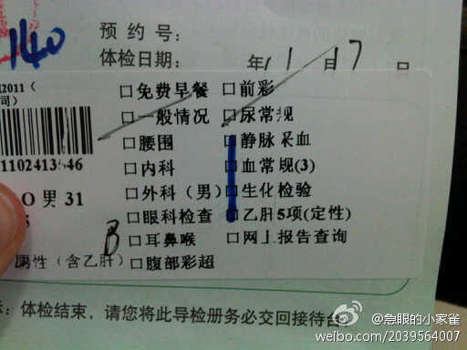
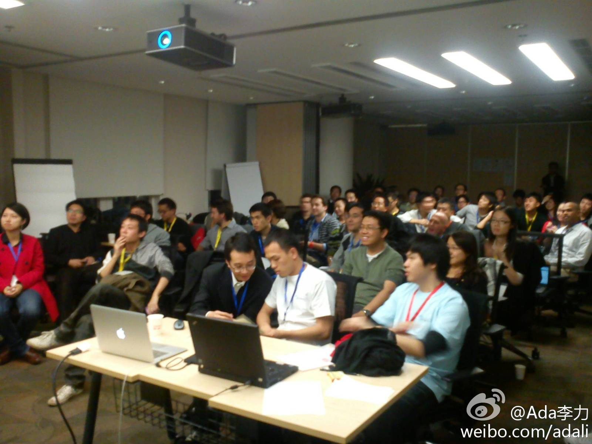

喜欢看八卦哈//@郭多娇: //@糖叔叔:至于吗？！ //@Trinity-猴年马月: @Gracie_在路上 没心没肺了 //@林克里斯朵夫: 这像是一个股价连创历史新高，区域独撑全球高增长的地方么 //@Rowena2011: 职代会是否向HR及Procurement反映下，心电图不能省吧 //@老于1966: 公司说，照了你也看不懂 //@云和众美:IBM的员工体检连心电图都给减了，真是越来越抠了，很多的诊室把你拒之门外，其他公司的项目至少三列，而我们只有两列。把员工的腰踩弯才是公司挺起的办法么？@IBM那些事 @Jobs-金 @博克IBM @快乐小茂 @王浩-Michael @清风茶馆空间 @王阳的艳阳天 @老刀IBM @詹永华2012 @银指尖儿 @陈果IBM @风卷云舒- 
iweekend今晚的活动，在甲骨文远洋国际大厦21层开始签到了。组织者Caroel是很专业的会务专家，很少几个志愿者就把一个五十多人的场子组织得井井有条。还请到了媒体协助报道，一记者说，甲骨文给社区提供这样的方便，名声会很不错。希望如此。
e-visa果然快，从发申请，到得到签证，五个小时。//@Ada李力: 新加坡公民帮忙申请e-visa, 24小时有结果, 这个方式最快. 网页链接 //@georgiazhao：新加坡移民局网站上可以申请e-visa， 准备电子护照照片，网上用信用卡交费。 具体地址我忘了，你google 下， 地址可以添公司地址，@Ada李力:下周三要去新加坡开个会, 现在还没签证, 问问有什么方式, 能够最快拿到新加坡签证?
iWeekend 的活动形式一直在演进，第一次活动中每个演讲者有三分钟时间来介绍自己的项目，第二次就变成了一分半，这次竟然只有三十秒，只够说完五句话。难度有些高。听众中不少熟悉面孔，都是这类形式很自由的活动中认识的。 
 //@林克里斯朵夫: 这像是一个股价连创历史新高，区域独撑全球高增长的地方么 //@Rowena2011: 职代会是否向HR及Procurement反映下，心电图不能省吧 //@老于1966: 公司说，照了你也看不懂 //
//@林克里斯朵夫: 这像是一个股价连创历史新高，区域独撑全球高增长的地方么 //@Rowena2011: 职代会是否向HR及Procurement反映下，心电图不能省吧 //@老于1966: 公司说，照了你也看不懂 //